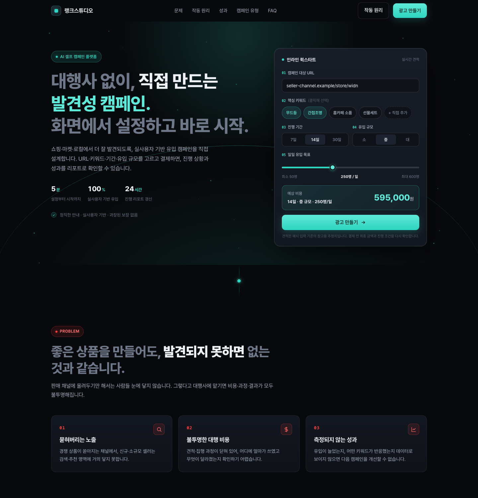
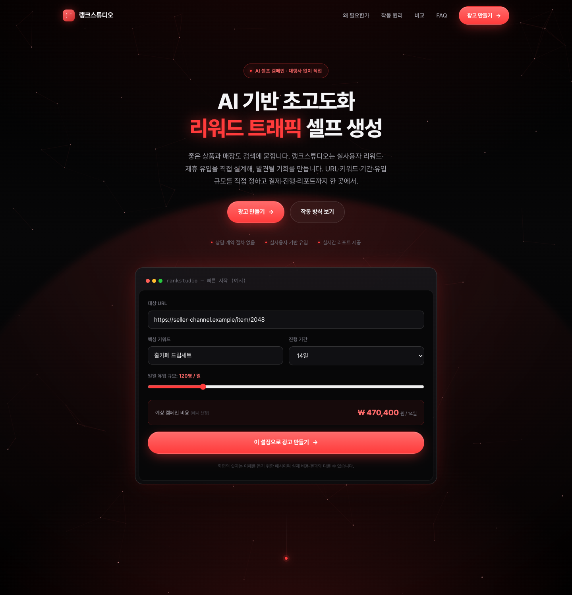
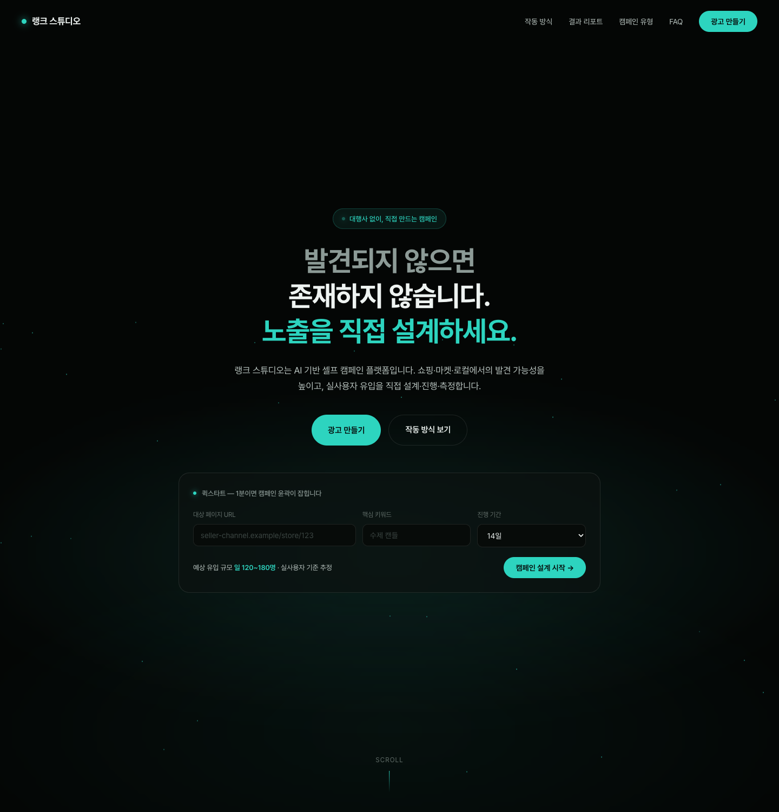
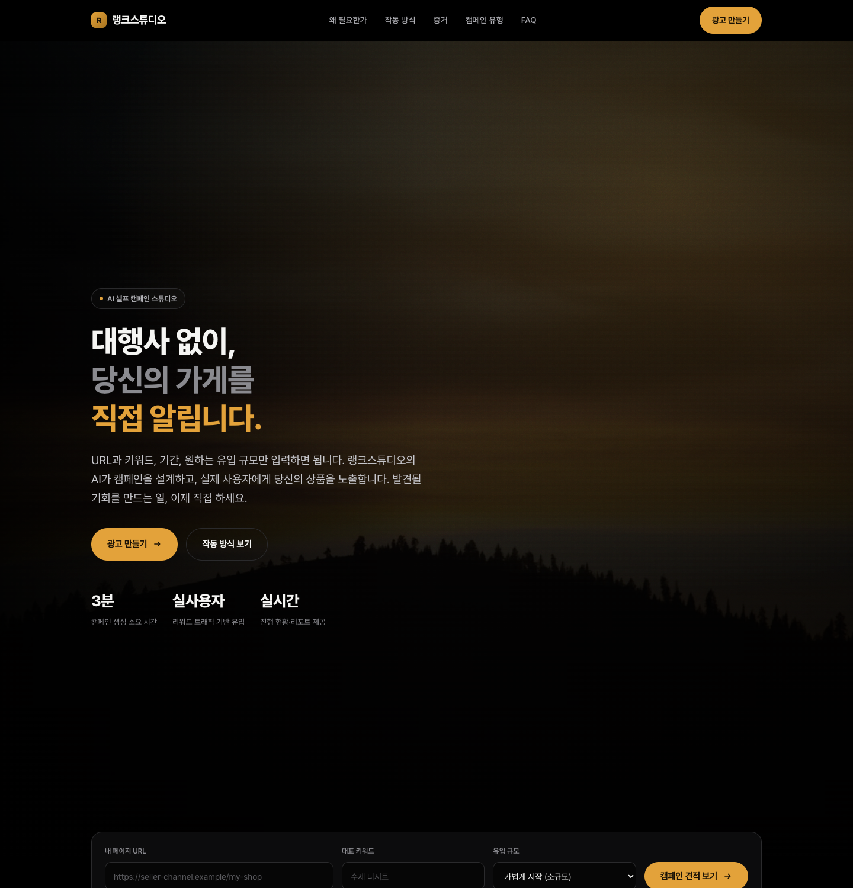
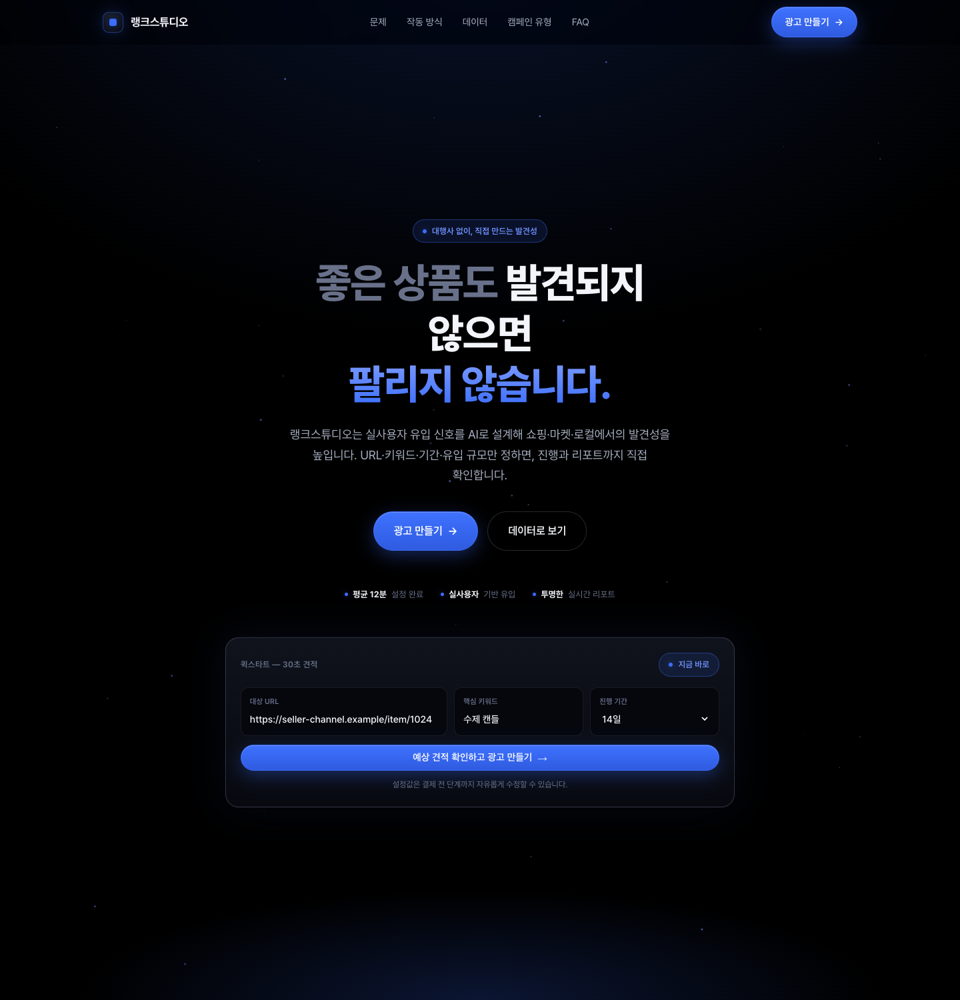
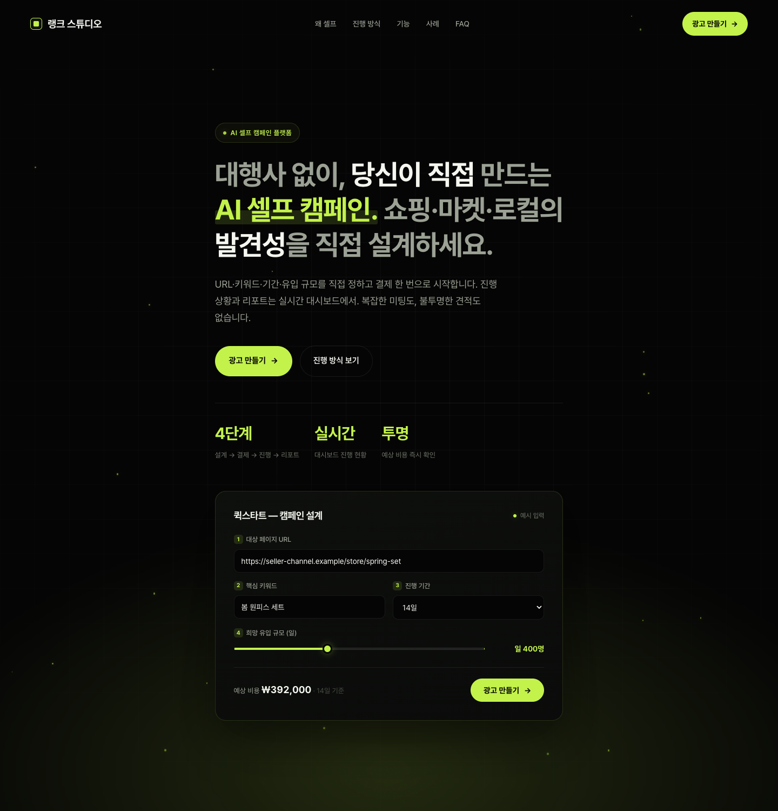
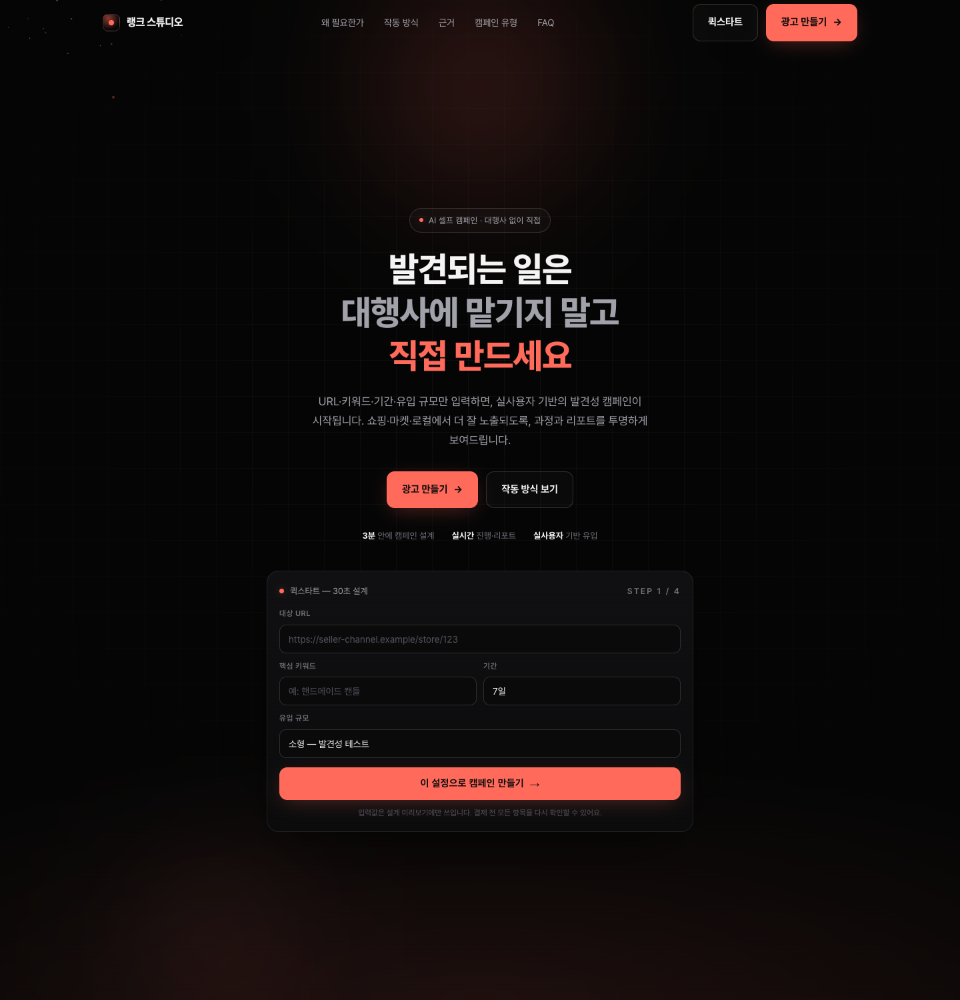
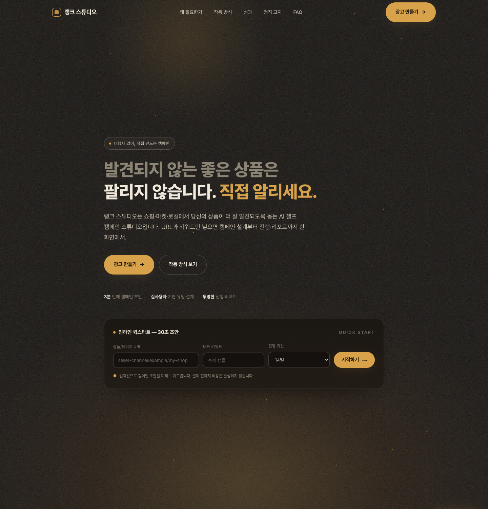
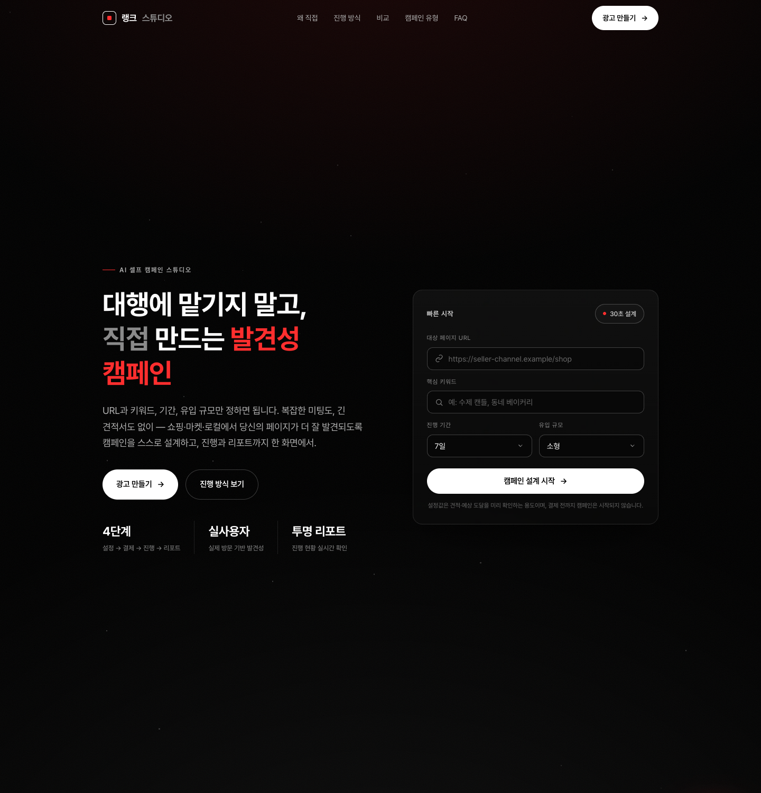
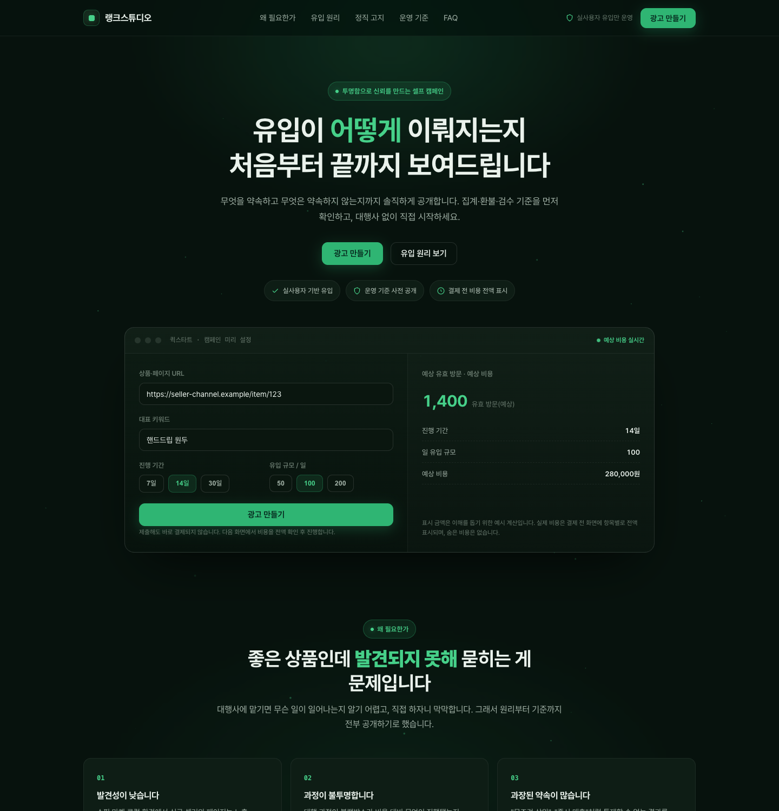

실제 the.pullimad.com을 캡처·분석해 그 디테일 언어 — 순흑 시네마틱 배경·분위기 조명(파티클·라디얼 글로우·호라이즌)·스크롤 안무(커넥터→점→글로우)·주석 달린 실사 목업·비교표·신화 깨기·거대 여백 — 를 적용했습니다. 자가전환 "광고 만들기" 인라인 퀵스타트 포함. 전부 Pretendard·정상 사이징, 각 시안은 자가 스크린샷→비평→수정 루프를 거쳤습니다. 카드를 열면 실제 스크롤 연출이 동작합니다.









